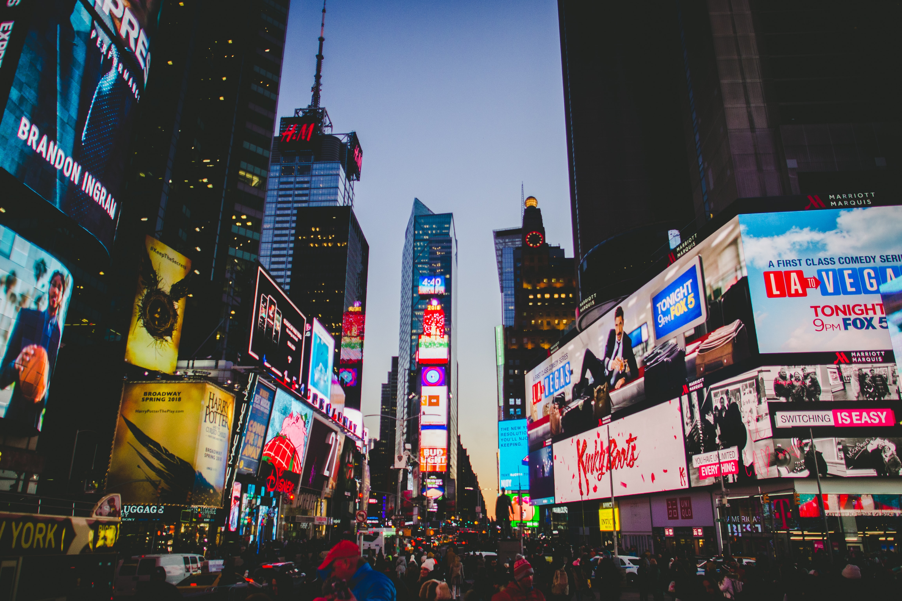

New-york
New-York est une ville composée de cinq arrondissements à l'embouchure du fleuve Hudson et de l'océan Atlantique. En son centre se trouve Manhattan, un arrondissement densément peuplé faisant partie des principaux centres commerciaux, financiers et culturels du monde. Ses sites incontournables comprennent des gratte-ciel comme l'Empire State Building et l'immense Central Park. Le théatre de Broadway est situé sur Times square.
Central Park:un site incontournable de New-York City
La "cour arrière" de New-York, un espace vert de 843 acres procure la sérénité et des loisirs à plus de deux millions de visiteurs chaque année. Conçu par Frederick Law Olmstead et Calvert Vaux en 1858, l'aménagement du parc a duré 16ans et a nécessité la plantation de 500 000 arbres et arbustes, le transport de vastes quantités de terre et de pierres pour créer des collines, des lacs et des prairies, et la construction de plus de 30ponts et arches.Empire State Building:l'une des meileures attractions touristiques de New-York
L'empire State Building est le plus haut et le plus célèbre gratte-ciel de New-York, faisant de ce dernier l'une des plus importantes attractions touristiques. Depuis sa construction en 1931, plus de 120 millions de visiteurs, y compris le groupe de rock Kiss et la reine Elisabeth II, ont embrassé la ville du regard du haut de son observatoire. Dessiné par le cabinet d'architectes Shreve, Lamb et Harmon dans les prospères années 1920, ce classique d'art déco, dont la construction a été achevée au cours de la dépression de 1929, fut en grande partie vacant pendant plusieurs années, donnat lieu à son sobriquet d'"Empty State Building". Il a été mis en scène dans de nombreux films. Quand King Kong est revenu en 1983 pour célébrer le 5àe anniversaire du film classique, les admirateurs du monde entier ont pu célébrer la fameuse escalade grâce à un gigantesque gorille gonflable placé sur l'immeuble.Traverser le Brooklyn Bridge , le New-York mythique
Le pont de Brooklyn est certainement devenu un des symboles les plus forts et un des sites les plus importants de la ville de New-York. Présent sur à peu près toutes les cartes postales de la ville, le pont de Brooklyn est aussi impressionnat de jour que de soir. Inauguré en 1883, le pont accueille aujourd'hui environ 120 000 voitures, 4 000 piétons et 2600 cyclistes chaque jour. L'histoire de sa construction est en soi une raison de le visiter. L'architecte chargé des travaux, August Roebling, est mort au beau milieu des travaux et c'est son fils Washington Roebling, qui a repris la tête du chantier jusqu'à ce qu'il fit lui même victime d'un grave accident et qu'il dû gérer les travaux à distance avec l'aide de sa femme. Le meilleur moyen de visiter le site est de traverser le pont à pied, de Brooklyn en direction de Manhattan. La vue y est à couper le souffle. Avant d'entamer la traversée, il est aussi possible de marcher le long des berges de la East River, au Brooklyn Bridge Park, pour comtempler le paysage urbain de la ville de l'autre côté. Au bout de la promenade, il est aussi possible d'apercevoir Liberty Island, où se trouve la légendaire Statue de la liberté.Times Square et le quartier des Théâtres
Reconnu comme le "carrefour du monde",Times Square est l'intersection la plus célèbre de New-York et le symbole du quartiers des théâtres animés environnats, incluant Broadway. Il s'appelait Longacre Square jusqu'en 1904, alors que New-York Times y construisit une tour de 25 étages. Son inauguration fut marquée par des feux d'artifices, un jour di Nouvel An, et la tradition continue aujourd'hui. De nos jours, une boule de cristal géante, qui descend du bâtiment à minuit pour marquer la nouvelle année, est acclamée par des millions de personnes assemblées sur la place. La réputation de Times Square a été entachée lorsque la 42e rue adjacente est devenue minable dansles années 1970. Les années 1990 ont vu fermer les peep-shows et les salles de cinéma classées X. Ainsi, grâce à des efforts concertés, tant du public que du privé, la rue et le quartier ont été transformés. 